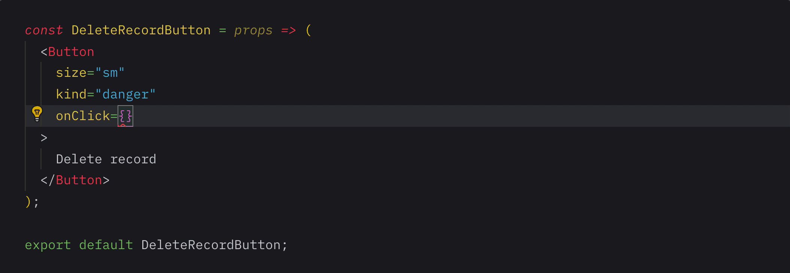

Reinforcing
your blocks
A practical guide to UI component testing
# Introduction
> It's too hard. We'll just add tests when we have more time. 😬👍🏽
## ...🤨 oh really?
# It's time to get down to business
# What is UI component testing?
Components are functions
### What is a test?

Code quality
Structure (HTML)
Visual (CSS)
Behavior (JS)
Accessibility
Performance
> What can I possibly do to break this component?
Why should I test my UI components?
- Makes you a better programmer
- Find bugs sooner and fix them faster
- Creating good software is our duty and craft
# Okay, so how do I test my UI components?
section>div[data-markdown]+aside.notes
Code quality
- Document all of your component props
- Use a linter to enforce this and more

## Structural tests (HTML)
### Does it render?